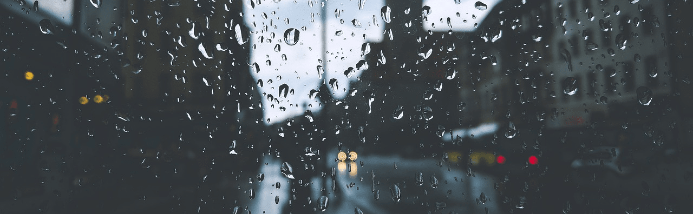

We are RainyDays
RainyDays was founded with the belief that rain gear should be as stylish as it is functional. We noticed a gap in the market for high-quality, fashionable rain jackets that cater specifically to adults who refuse to let the weather dictate their plans. Since then, we’ve grown into a trusted brand known for our commitment to excellence and customer satisfaction.
At RainyDays, we specialize in one thing: rain jackets. Our passion for keeping you dry and comfortable drives everything we do. We know that a reliable rain jacket is more than just a piece of clothing, it's your shield against the elements, your companion on rainy days, and your go-to for any outdoor adventure.
We’re more than just a store; we’re your partner in weathering the storm. Explore our collection of rain jackets, find the perfect fit for your needs, and step out with confidence, rain or shine. Join the RainyDays community, and embrace the rain with style and assurance.